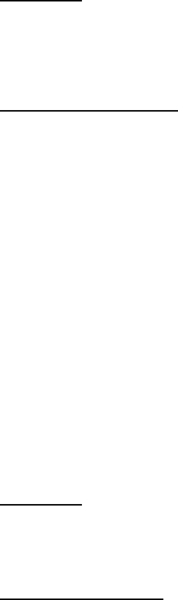

Sed de indata . 23.05.2017 3 FP 43-04, ver. 1
Eu aş vrea să fac o singură observaţie pe procedură. Vă înţeleg că sunteţi obişnuiţi
cu unanimităţi ca la Partidul Comunist, dar, poate data viitoare ne daţi şi pixuri ca să ne
putem exercita dreptul de vot.
Dl. Preşedinte:
Am să vă răspund eu la această chestiune. Vă mulţumesc pentru observaţia dvs., art.
72 din legea citată, legea administraţiei publice locale, spune că atribuţiile care sunt
conferite în cazul în care este vacantată funcţia de primar, revine unuia dintre viceprimari,
nu este cazul, avem un singur viceprimar, sau viceprimarului. De aceea, propunerea făcută
de către executiv este în sensul de a fi desemnat dl. viceprimar, este alin. 1 al art. 72 aşa
cum este modificat prin Ordonanţa de Urgenţă nr. 68/2014.
D-na Consilier Local Predescu:
De spus, poate să spună fiecare orice, dar prin ceea ce spune arată limitele
cunoştinţelor şi înţelegerea sa. Pe de o parte, în raport de ceea ce s-a spus înainte, dl.
preşedinte, aţi răspuns. Am fi fost puşi în situaţia de a alege unul dintre consilieri doar
dacă nu exista viceprimar în funcţie care să poată să preia atribuţiile de primar. Legea este
expresă. Acum n-am înţeles în ce constă inconsecvenţa, pentru că se aruncă un cuvânt fără
să se spună despre ce este vorba. Nu ascund faptul că eu, personal, ieri am discutat cu dl.
viceprimar Genoiu şi aş fi fost pentru menţinerea, rămânerea în funcţie, dar dânsul este de
o loialitate extraordinară. Văzând dispoziţiile legii, văzând faptul că prefectul are la
dispoziţie un termen de 30 de zile ca să declare vacant postul, numai la cererea partidului
de pe listele căruia a făcut parte la alegerea în funcţia de consilier municipal, pentru că
dânsul, ca viceprimar, vine din consilier municipal, Domnia Sa a zis că este mult mai
onorabil să pornească de la o luptă ca un simplu cetăţean al municipiului Craiova, şi, după
câte ştiu eu, chiar cere contracandidaţilor acelaşi lucru. Pe cale de consecinţă, suntem în
prezenţa unui act mai rar întâlnit, în care un om bazându-se doar pe notorietatea sa, şi pe
faptele care stau în spate, porneşte la această luptă. Nu este vorba de nicio incosecvenţă,
este vorba de faptul că o persoană care avea exerciţiul unei autorităţi publice ce viza
exercitarea funcţiei pentru care chiar începe campania locală, şi anume, cea de primar,
înţelege să renunţe tocmai pentru a arăta că şi fără scaunul acesta în spate poate să câştige
detaşat ceea ce noi, consilierii PSD, ştim că se va realiza cu certitudine. Pe cale de
consecinţă, nu înţeleg în ce constă inconsecvenţa. Este o situaţie care a survenit, este o
situaţie la care nimeni nu se putea aştepta, iar, pe de altă parte, este o decizie legală şi
peste legală, este o chestiune de moralitate pe care o arată tuturor. Eu vă rog să supuneţi
închiderea dezbaterilor şi să procedăm la vot, votul este secret, nu avem cum să trecem
altă persoană pe buletinele de vot. Vă mulţumesc.
Dl. Preşedinte:
Principala noastră preocupare este să fie respectată legea şi cred că aici avem
unanimitate în sensul că se respectă dispoziţiile legale. Consideraţiile legate de
oportunitate sau de conjunctură, nu fac obiectul acestei şedinţe a consiliului local. Dl.
Florescu, am observat că doriţi să luaţi cuvântul, însă având în vedere că nu v-a fost
menţionat numele, v-aţi spus punctul de vedere, l-am înţeles cu toţii.
Dl. Consilier Local Florescu:
A fost un atac la persoană, fiind singura persoană care am luat cuvântul. Se
subînţelege atacul.